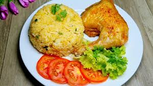

Cơm gà là một món ăn hấp dẫn và quen thuộc. Nguyên liệu chính để làm món này có gạo, thịt gà, gừng, tỏi, hành khô và nghệ. Gạo được đem nấu cùng với nước luộc gà nên hạt cơm chín rất tơi xốp, có màu vàng đẹp mắt và vị béo ngậy.
Khi ăn, người ta sẽ chặt gà thành từng miếng vừa miệng, thịt gà dai ngon và ngọt nước. Món này ăn kèm với một chén nước mắm gừng chua ngọt đậm đà, thêm chút dưa leo và rau răm để hương vị thêm phần trọn vẹn.
